Roof head lining ASSY removal |
| 1. Remove the rear seat back ASSY removed (the integrated rear seat is possible) |
Make the rear seat Batsuku in an advance.
 |
Remove the clip of the two bolts mounting part.
 |
Turn over the rear seat Batsuku cover, remove the two bolts, and remove the rear seat Batsuku ASSY.
| 2. Remove the rear seat cushion assemble (integrated rear seat) |
Press the lock of the front lock in the direction of the arrow in the figure to remove it.
Pass the rear seat belt through the rear seat cushion cover and pad back rubber band.
 |
Remove the hook at the rear hook at the rear seat cushion assembly, and remove the rear seat cushion assessy.
| 3. Remove the rear seat back hinge SUB-ASSY RH removed (overalled rear seat) |
 |
Remove the bolt and remove the rear seat Batsuku hinge RH.
| 4. Rena seat back hinge SUB-ASSY LH removed (integrated rear seat) |
Remove the bolt and remove the rear seat Batsuku hinge LH.
| 5. Remove the rear seat back ASSY RH removed (rear seat split can be split) |
| 6. Remove the rear seat back ASSY LH removed (rear seat split can be split) |
Make the rear seat Batsuku in an advance.
 |
Remove the clip of the two bolts mounting part.
|
Turn the lower part of the rear seat Batsuku cover, remove the two bolts, and remove the rear seat.
| 7. Remove the rear seat cushion asy (rear seat split can be divided) |
Lock the front side of the rear seat cushion Assy is locked by the rear seat cushion lock striker.
 |
Remove the snap ring from the rear seat back hinge RH.
Rena seat cushion Assy The right bracket is pulled out and remove the rear seat hinge RH.
 |
Remove the bolt and remove the rear seat hinge LH.
Rena seat cushion Assy rear seat hook Assy RH is drawn and the rear seat cushion Assy is removed.
Pass the rear seat belt through the rear seat cushion cover and pad back rubber band.
Remove the rear seat cushion assessy.
| 8. Remove the rear seat Batsuku ASSY removed (drive system 4WD) |
 |
Make the rear seat back in advance.
Use the clip resover to remove the two clips.
|
Turn over the rear seat back cover.
Remove the two bolts and remove the rear seat back ASSY.
| 9. Remove the rear seat cushion assemble (drive system 4WD) |
 |
Press the clip lever in the direction of the figure, lift the front end of the rear seat cushion ASSY and remove the clip.
Remove the hook.
Remove the seat belt and remove the rear seat cushion ASSY.
| 10. Front doorskuff plate RH removal |
 |
Pull it up by hand, remove the claws, and remove the front door skaf plate RH.
| 11. Cowl side trim board RH is removed |
 |
Remove the claws and studs and remove the cowl side trim board.
| 12. Front door opening trim Weather strip RH is removed |
Remove the front door opening trimweather strip RH.
| 13. Remove the front door scuff plate LH |
 |
Pull up by hand, remove the claw from behind the vehicle, and remove the front door skaf plate LH.
| 14. Deck side trim cover FR LH removed |
 |
Pull it in front of the vehicle by hand, remove the claws, and remove the deck child trim cover FR LH.
| 15. Reardoor opening Trim Weather Strip LH removed |
Remove the rear door opening trimweather strip LH.
| 16. Remove the backdoor with the strip |
Remove the backdoor weather strip.
| 17. Remove the rear floor carpet (drive system FF) |
Take off the rear floor carpet.
| 18. Spare Wheel Cover ASSY removes (drive system FF) |
Remove the spare wheel cover ASSY.
| 19. Luggage room box lid removes (drive system 4WD) |
Remove the luggage room box slid.
| 20. Luggage compartment tray removed (drive system 4WD) |
Remove the trunk (luggage compartment) tray.
| 21. Trunk (luggage compartment) side tray removed (drive system 4WD) |
Remove the trunk (luggage compartment) side tray.
| 22. Remove the backdoor scuff plate |
 |
Use the clip remover to remove the two clips.
Pull up by hand from the end of the trim cover, remove the clip, and remove the backdoor scuff plate.
| 23. Remove the wrap belt Outanka cover |
 |
Remove the claws and remove the wrap belt Otaanca cover.
| 24. Remove the front seat Outabelt Assemble RH (Floanka Club) |
Remove the bolt and remove the front seat Outabelt Assy RH (floor anka).
| 25. Rear seat 3 point type belt ASSY OUT RH removed (floor anka part) |
Remove the bolt and remove the front seat Outabelt Assy RH (floor anka).
| 26. Side No.1 Trim ASSY RH removed (drive system FF) |
| 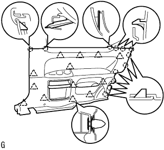 |
Pull it in the inside of the vehicle by hand, remove the clip and claws, and remove the side No.1 trim ASSY RH.
| 27. Side No.1 Trim ASSY RH removed (drive system 4WD) |
 |
Pull it in the inside of the vehicle by hand, remove the clip and claws, and remove the side No.1 trim ASSY RH.
| 28. Deck Trim side panel ASSY RH removed (drive system FF) |
 |
Remove the clip and claws and remove the deck trim side panel ASSY RH.
| 29. Deck trim side panel ASSY RH removed (drive system 4WD) |
 |
Remove the clip and claws and remove the deck trim side panel ASSY RH.
| 30. Roof side garnish Inn RH removal |
| 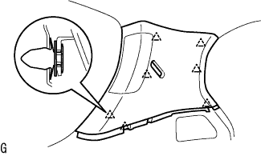 |
Pull the garnishille toward the inside of the vehicle, remove the clip, and remove the roof side -inanaganish RH.
| Y31. Seat belt anka cover caps removed |
 |
Use a thin -bladed flathead screwdriver with a protective tape to remove the claw, remove the bolt, and remove the seat belt anchor cover.
| 32. Front seat ota -altar Assembly RH is removed |
Remove the bolt and remove the front seat Otabelt Assy RH.
 |
Use a thin -bladed flashed screwdriver with a protective tape to remove the claws, pull the locking button in front and unlock the lock.
Separate the connector (for plitency).
Remove the two bolts and remove the front seat outa belt ASSY RH.
| 33. Centapillar garnish RH removal |
 |
Pull the garnish to the inside of the vehicle, remove the clip, and remove the center pillar garnish RH.
| 34. Rear seat 3 point type belt ASSY OUT LH removed (floor anka part) |
Remove the bolt and remove the rear seat 3 point type belt ASSY OUT LH (floor anka).
| 35. Deck trim side panel ASSY LH removed (drive system FF) |
 |
Pull the side board in the inside of the vehicle, remove the clip and claws, and remove the deck trim side panel ASSY LH.
| 36. Deck trim side panel ASSY LH removed (drive system 4WD) |
 |
Pull the side board in the inside of the vehicle, remove the clip and claws, and remove the deck trim side panel ASSY LH.
| v37. Roof side garnish Inn LH removal |
 |
Pull the garnish with your hand in the inside of the vehicle, remove the clip, and remove the roof side in -nagarnish LH.
| 38. Centapillar garnish LH removal |
 |
Pull the garnish in the inside of the vehicle and remove the clip.
Cut the connector and remove the center pillar garnish LH.
| 39. Remove the front pillar garnish LWR RH |
 |
Pull up from the rear end of the vehicle to remove the claws.
Pull the back of the vehicle and remove the front pillar garnish LWR RH.
| 40. Remove the front pillar garnish RH |
| 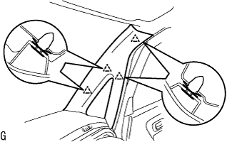 |
Pull it from the upper part of the garnish to the inside of the vehicle, remove the clip, and remove the front pillar garnish RH.
| 41. Pillar No.1 Garnish LH removed |
Remove the claws and remove the pillar No.1 garnish LH.
| 42. Remove the front pillar garnish LH |
| 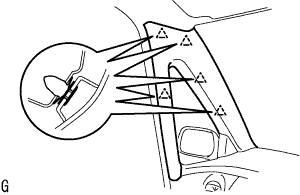 |
Pull the inside of the vehicle from the upper part of the garnish, remove the clip, and remove the front pillar garnish LH.
| 43. Room lamp ASSY No.1 removed |
| 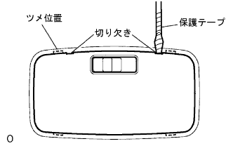 |
Use a flathead screwdriver with a protective tape to cut the lens cover, remove the claws, and remove the lens cover.
| 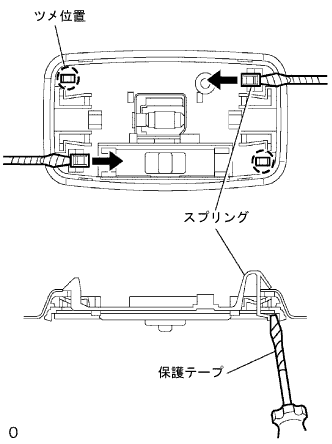 |
Use a flathead screwdriver to release two springs.
Use a flathead screwdriver with a protective tape to press the spring in the direction of the figure and remove the bite.
Pull the room lamp to the front by hand and remove the claws.
Cut the connector and remove the room lamp ASSY No.1.
| 44. Map lamp ASSY removes |
| 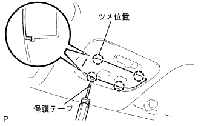 |
Use a thin -bladed flashed screwdriver with a protective tape to remove the claws and remove the lens.
Take off two screws.
| 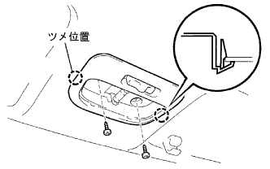 |
Remove the claws.
Remove the connector and remove the map lamp ASSY.
| 45. Assist grip ASSY removed (FR LH) |
| 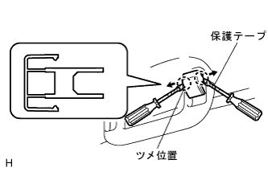 |
Use two thin -blade flashed screwdrivers with protective tape, and insert them into both sides of the cover as shown in the figure.
| 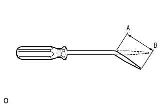 |
While holding one claw removed, remove the other claw on the other side and remove the assisted grip cover.
| 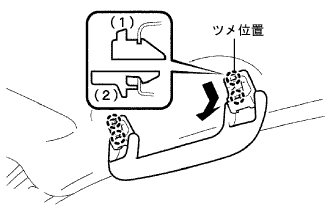 |
Remove the claws in the order of the figure, and remove the assist grip asser.
| 46. Remove the assist grip (RR) |
| 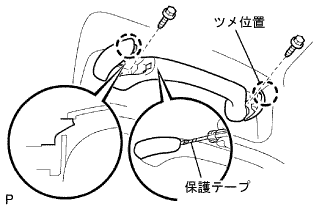 |
Use a minus thin blade driver with a protective tape to remove the claws and flip the assist grip cover.
Remove the four bolts and remove two assisted grips.
| 47. Remove Viser ASSY RH |
Remove the two screws and remove the Viser ASSY RH.
| 48. Viser ASSY LH removed |
Remove the two screws and remove the Viser ASSY LH.
| 49. Remove the visor holder |
| 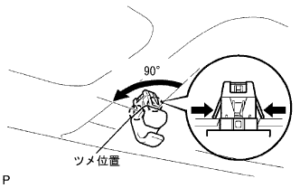 |
Rotate the holder to the left 90 ° to the left and pull out the two Byzaholder.
| 50. Roof head lining ASSY removed |
 |
Use the clip resover to remove the three clips.
Cut the connector, remove the match with the side rail spacer floor, and remove the roof head lining from the back door.
| 51. Roof wire No.1 removed |
Remove the fixed tape and remove the roof wire No.1.